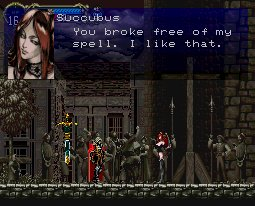

|
Story-Line04
Olrox
กลับไปยังโซน Olrox อีกครั้ง
บริเวณใกล้ๆ กับทางวาร์ป จะมีช่องให้ขึ้นไปได้
เมื่อขึ้นไป จะเจอกับโซน Olrox ที่แท้จริง
ด้านซ้ายล่าง จะมีทางเชื่อมต่อไปยังโซน Royal
Chapel
โดยต้องทำลายรูปปั้นที่ขวางทาง
และทางบริเวณนั้นจะมีเพดานที่สามารถทำลายได้ (WallSecret07)
ด้านบนจะมี Relic : Sword Card
ทำให้สามารถเรียก Familar "ดาบ" ออกมาได้
(ในภาค Japan จะเป็น Sprite Card
แทน)
(ส่วน Sword Card ในภาค Japan จะอยู่ห้องด้านขวาสุด)
ด้านบนซ้ายของโซนนี้จะเจอ Boss : Olrox
Boss : Olrox

Level : 25
HP : 666
Exp : 500
Strong : Dark
Boss : Olrox (2nd From)
Level : 26
HP : 800
Exp : 2,000
Weak : Holy (เฉพาะส่วนหัว)
วิธีปราบ
หากได้รับดาบ Were Bane มาจาก
Hunting Girl ในโซน Colosseum
ซึ่งเมื่อกด "ล่าง" "ล่าง+หน้า" "หน้า+โจมตี"
จะเป็นการฟันรัวๆ
จะปราบได้อย่างง่ายดายและรวดเร็ว
เมื่อ Olrox แปลงร่าง และยิงแสงเลเซอร์
ให้ใช้ท่า "Hellfire" วาร์ปหลบได้
เมื่อปราบได้ ห้องด้านซ้ายจะได้ Relic
: Echo of Bat
ทำให้เมื่อแปลงร่างเป็นค้าวคาวแล้ว จะยิงแสงในที่มืดได้
จากนั้นกลับไปยังโซน Marble Gallery
ใกล้ๆ กับทางเดินที่เป็นห้องยาวๆ
จะมีประตูสีฟ้า ที่ลงอาคมไว้ (ประตูที่ต้องใช้ Relic
: Jewel of Open เปิด)
เข้าไป ภายในจะมีสวิตช์ ให้เหยียบ

จะทำให้พื้นที่เป็นประตูสีแดงเปิดออก
เดินลงไปด้านล่าง จะเป็นห้องให้เข้าไปเก็บ Item
ส่วนด้านซ้ายจะมีทางลงไป เป็นโซนใหม่
Underground Caverns
เมื่อลงไปทางด้านซ้ายมือจะมีกำแพงลับซ่อนอยู่
ทำลายเข้าไปได้ (WallSecret08)
และในส่วนด้านซ้ายล่าง
หากเล่นในระบบ Saturn จะมีทางเพิ่มขึ้นมา
* - - Begin Saturn
Version Only - - *
Cursed Prison
ในโซนนี้จะมีศัตรูและอาวุธใหม่ๆ
แต่ไม่มีอะไรมากมาย
หากไปด้านซ้ายสุด จะไปโผล่ยังโซน Marble Gallery
แต่ให้กลับไปยังโซน Underground Caverns อีกครั้ง
* - - End Saturn
Vesion Only - - *
จากนั้นไปทางด้านขวา จะมีทางลงไปด้านล่าง
ด้านขวาสุดจะเจอห้อง Save สีม่วง ???
เมื่อเข้าไปจะเจอกับโซนใหม่ ???
Nightmare
จะเจอ Lisa ซึ่งเป็นแม่ของ Alucard
เธอบอกว่าจะยอมตายเพื่อไถ่โทษ
และบอกให้ Alucard รับฟังข้อความสุดท้ายของเธอ
นั่นคือให้ไถ่บาปให้แก่มนุษย์ โดยการฆ่า...
แต่ Alucard ไม่เชื่อ เพราะแม่ของเขาจะไม่พูดเช่นนี้
และเป็นเช่นนั้นจริงๆ Lisa คือ Succubus ปลอมตัวมา
Boss : Succubus

Level : 25
HP : 666
Exp : 2,000
Strong : Dark
จากนั้นจะกลับมายังโซน Underground Caverns
อีกครั้ง
ลงไปด้านล่างขวา จะเจอ Scylla Wyrm
โจมตี
เมื่อปราบได้ ขึ้นไปยังห้องด้านบนจะเจอกับ Scylla
Boss : Scylla
Level : 14
HP : 200
Exp : 500
Weak : Thunder
Absorb : Water
วิธีปราบ
ให้ยืนอยู่บนแท่น แล้วใช้ท่า "Hellfire" ยิงใส่
โดยให้ใช้ท่าที่ปล่อยลูกไฟดำ 2 ลูก จะรุนแรงมากกว่า
(โดยการกด "บน" ในขณะที่หายตัว)
Next
to Underground Caverns (2)
|